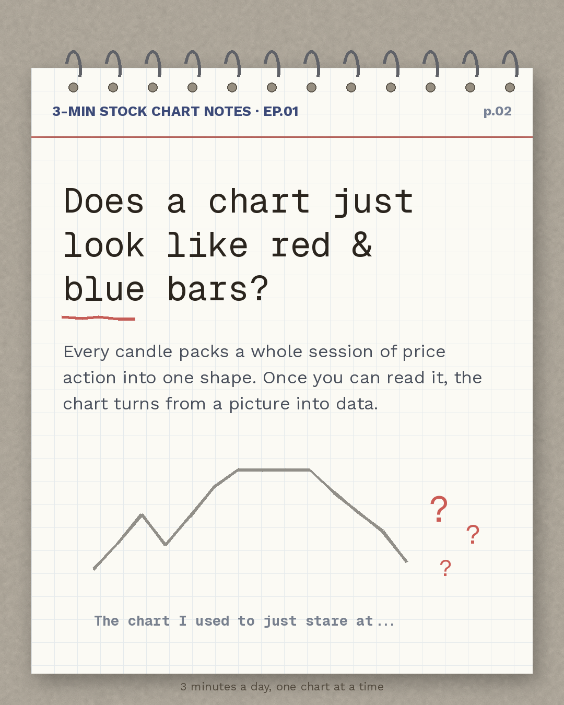
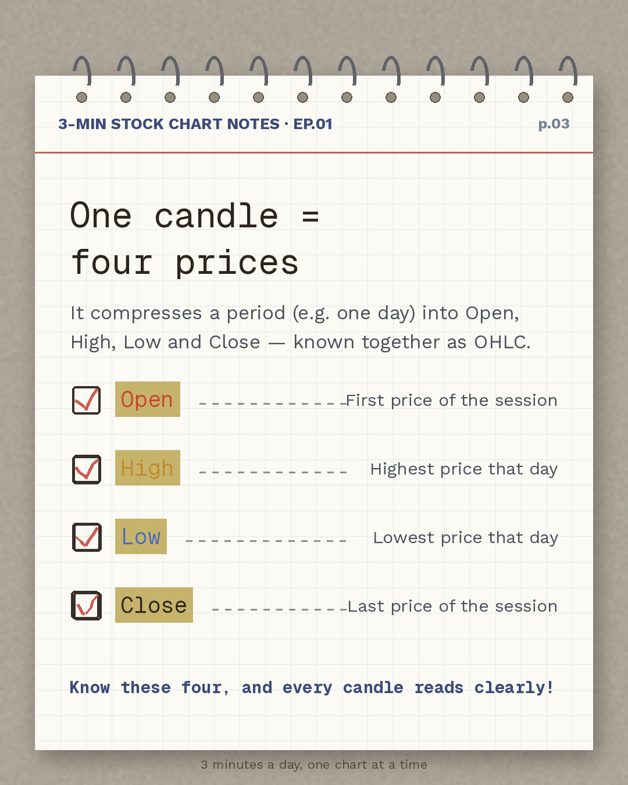
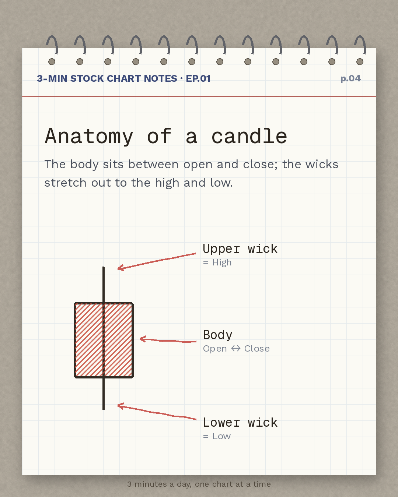
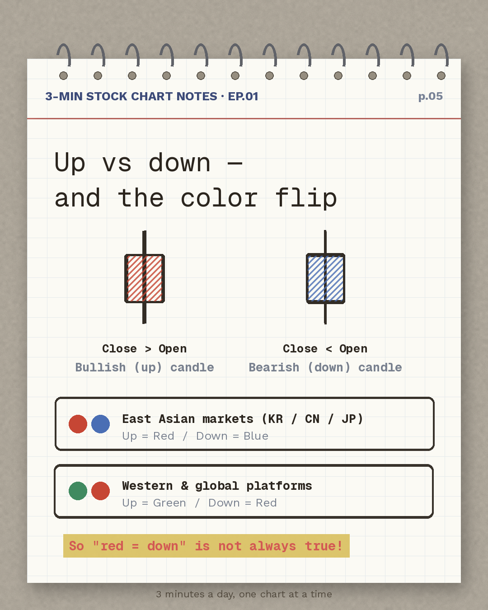
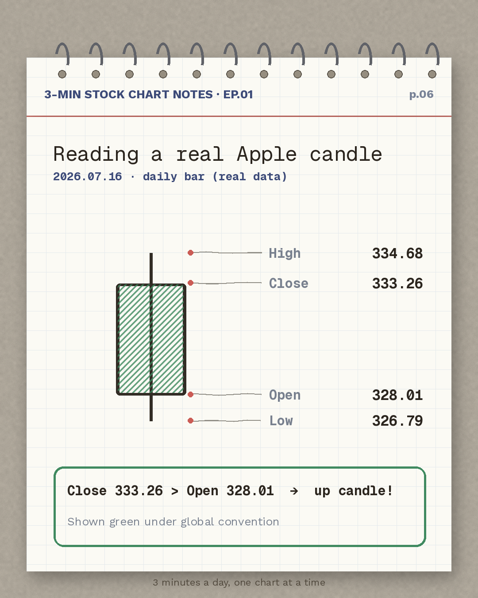
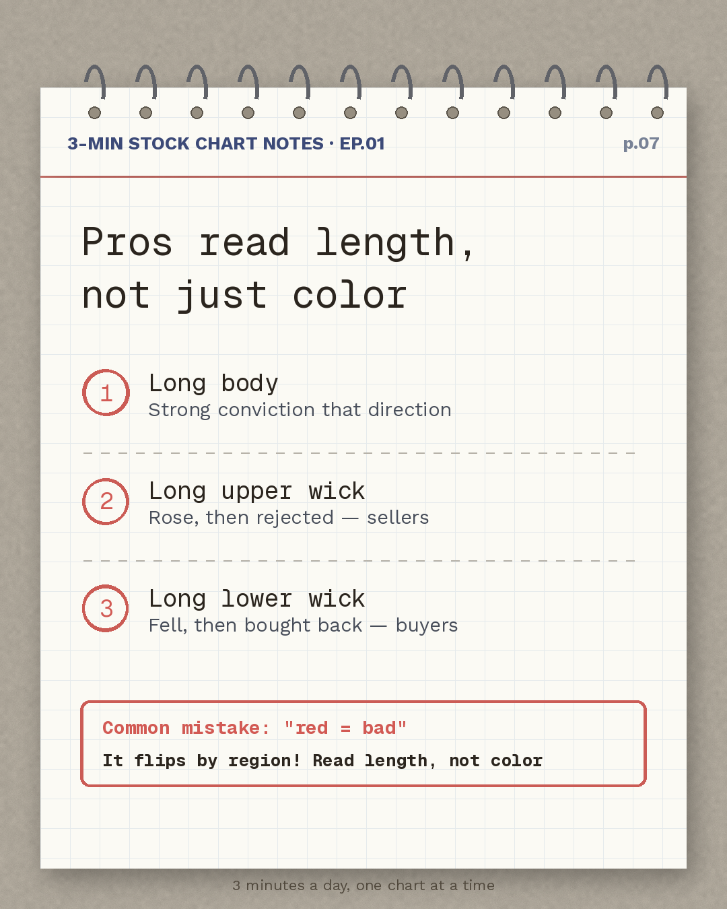
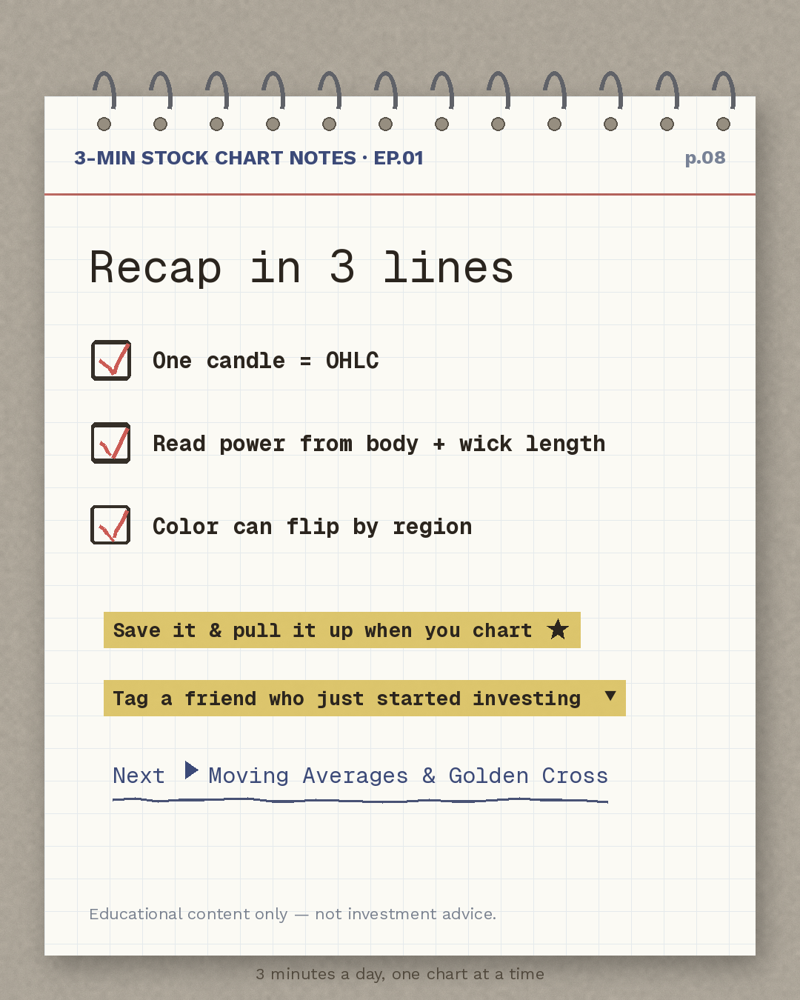

p.01 3-Min Stock Chart Notes EP.01 Candlestick Basics cover — candle colors flip by region

p.02 Does a chart just look like red and blue bars? Introducing what one candle holds

p.03 One candle equals four prices — Open, High, Low, Close (OHLC) explained

p.04 Anatomy of a candle — body, upper wick and lower wick diagram

p.05 Up vs down and the color flip — East Asian vs Western candle color conventions compared

p.06 Reading a real Apple candle — analysis of real daily bar data from July 16, 2026

p.07 Pros read length, not just color — how to read strength from body and wick length

p.08 Recap in 3 lines and a preview of the next episode: Moving Averages and Golden Cross
캡션 (627자)
📊 A new weekend series: 3-Min Stock Chart Notes. Weekdays bring you market briefings morning & night — weekends, we'll learn to read charts, one page at a time.
EP.01 Candlestick Basics — Does red always mean "down"? ❌ Candle colors flip depending on where you look. From what one candle holds (OHLC) to reading a real Apple candle, in 3 minutes.
📌 Save it & pull it up when you chart 👇 Tag a friend who just started investing
(Educational content only — not investment advice)